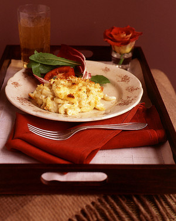

Martha Stewart's Perfect Mac and Cheese

Description
This is an easy to follow recipe for gourmet Mac and Cheese with several different gourmet cheeses that are used to make the roux (cheese based sauce.).
The crunchy top is made with butter and white bread pieces.
Ingredients
- 5 1/2 cups milk
- 1/2 cup all-purpose flour
- 2 teaspoons kosher salt
- 1/4 teaspoon freshly grated nutmeg
- 1/4 teaspoon freshly ground black pepper
- 1/4 teaspoon cayenne pepper
- 4 1/2 cups (about 18 ounces) grated sharp white cheddar
- 2 cups (about 8 ounces) grated Gruyere or 1 1/4 cups (about 5 ounces) grated pecorino Romano
- 1 pound elbow macaroni
Steps
- Heat the oven to 375 degrees. Butter a 3-quart casserole dish; set aside. Place bread pieces in a medium bowl. In a small saucepan over medium heat, melt 2 tablespoons butter. Pour butter into the bowl with bread, and toss. Set the breadcrumbs aside. In a medium saucepan set over medium heat, heat milk. Melt remaining 6 tablespoons butter in a high-sided skillet over medium heat. When butter bubbles, add flour. Cook, stirring, 1 minute.
- Slowly pour hot milk into flour-butter mixture while whisking. Continue cooking, whisking constantly, until the mixture bubbles and becomes thick.
- Remove the pan from the heat. Stir in salt, nutmeg, black pepper, cayenne pepper, 3 cups cheddar, and 1 1/2 cups Gruyere or 1 cup pecorino Romano. Set cheese sauce aside.
- Fill a large saucepan with water. Bring to a boil. Add macaroni; cook 2 to 3 fewer minutes than manufacturer's directions, until outside of pasta is cooked and inside is underdone. (Different brands of macaroni cook at different rates; be sure to read the instructions.) Transfer the macaroni to a colander, rinse under cold running water, and drain well. Stir macaroni into the reserved cheese sauce.
- Pour the mixture into the prepared casserole dish. Sprinkle remaining 1 1/2 cups cheddar and 1/2 cup Gruyere or 1/4 cup pecorino Romano; scatter breadcrumbs over the top. Bake until browned on top, about 30 minutes. Transfer dish to a wire rack to cool for 5 minutes; serve.